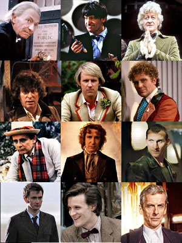
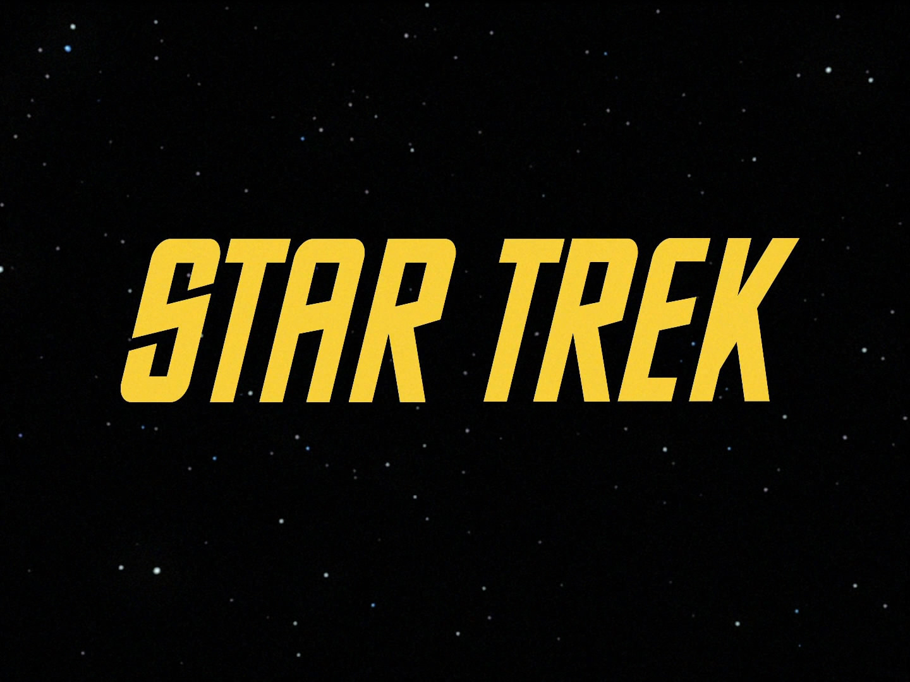
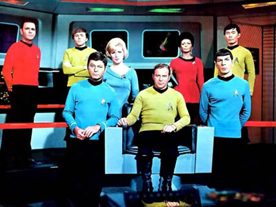

Сериалы шестидесятых
Наряду с новыми комедийными и мелодраматическими сериалами («Семейка Брейди», «Главный госпиталь» и другие), продолжающими традиции данных жанров и находящих новые пути воплощения концепций, шестидесятые дарят миру совершенно новые идеи – сериалы научно-фантастические.
В 1963 году в Великобритании выходит первая серия культового научно-фантастического сериала ВВС «Доктор Кто» (англ. Doctor Who). Сериал рассказывает о приключениях инопланетного путешественника во времени, известном как Доктор. Вместе со своими спутниками он путешествует во времени и пространстве как для спасения целых цивилизаций, так и для собственного удовольствия.
«Доктор Кто» стал самым продолжительным научно-фантастическим сериалом в мире, важной частью массовой культуры Великобритании и многих других стран, элементы сериала известны и узнаваемы не только его фанатами, которые есть во многих странах мира, их называют «Whovians» (производное от Doctor Who). Он получил признание публики и критиков за образность историй, творческие низкобюджетные спецэффекты, новаторское использование электронной музыки (созданной BBC Radiophonic Workshop) и т. д., что отмечено множеством премий. Оригинальный сериал шёл с 1963 по 1989 год и изначально был направлен на семейную аудиторию. Доктор – эксцентричный инопланетный путешественник великого ума, который сражался с несправедливостью, путешествуя во времени и пространстве на своей старой машине времени под названием ТАРДИС, часто в сопровождении спутников-землян. ТАРДИС намного больше изнутри, чем снаружи, выглядит как британская полицейская будка 1960-х, и её название является аббревиатурой от Time And Relative Dimension In Space (TARDIS). Доктор принадлежит к расе Повелителей Времени с планеты Галлифрей.
В течение сериала Доктор несколько раз «регенерировал», при этом его внешность и манера поведения менялись – это позволяло продюсерам сериала заменять исполнителя главной роли, при этом подчеркивая, что персонаж, несмотря на смену лица, остается тем же самым, тождественным всем предыдущим воплощениям Доктора.
На американском же телевидении стартует, ставший в последствии культовым, Звёздный путь: Оригинальный сериал (англ. Star Trek: The Original Series, TOS) – научно-фантастический телевизионный сериал о приключениях звездолета USS Enterprise (NCC-1701) и его экипажа, созданный Джином Родденберри и положивший начало вселенной «Звёздного пути».
Вселенная «Звёздного пути» рисует космическое будущее, на первый взгляд кажущееся утопией, в котором существует Объединённая федерация планет, членом которой является и Земля. В это же время значительные области Галактики остаются неизученными и готовят исследователям множество сюрпризов и открытий. «Наша цель – смело идти туда, где не ступала нога человека» – таков девиз героев «Звёздного пути».
Вселенная «Звёздного пути» – одна из наиболее детально проработанных вымышленных вселенных. Каждый персонаж имеет свою биографию, каждая цивилизация – свою культуру, традиции и историю. В официальных источниках можно найти детальную историю вселенной, технические характеристики звездолётов, точные описания каждой мелочи – от рецептов традиционных клингонских блюд до правил игры в трёхмерные шахматы.
В 1961 году первый человек в мире отправляется в космос. Это событие мирового масштаба заставляет людей задуматься о Вселенной, о покорении новых миров, о своем месте в этом необъятном пространстве. Поэтому данные сериалы как нельзя лучше иллюстрируют мечты и надежды на прекрасное будущее, в котором человек отправляется все дальше в неизведанное.
Эти шоу, несмотря на их фантастический характер, безусловно, являются отражением тогдашней действительности – помимо светлых мыслей о будущем, можно заметить тревогу и страх за него. Мировая обстановка накаляется, напряжение Холодной войны только усиливается, гонка вооружений находится в самом разгаре. Сможет ли человечество прийти к миру? Или погрязнет в разрушительных войнах, ненависти, вражде, грозящих уничтожению цивилизации? Темы расовой неприязни, геноцида, смертельного ядерного оружия становятся сюжетами серий.
Сериалы затрагивают важные моральные и нравственные проблемы, призывают к гуманизму, толерантности, задаются различными глубокими философско-этическими вопросами.
Интересным является то, что экипаж мостика звездолета Энтерпрайз является интернациональным, даже межпланетным: начальник инженерной службы Монтгомери Скотт является шотландцем по национальности, офицер связи лейтенант Нийота Ухура – африканкой, рулевой и офицер по тактике лейтенант Хикару Сулу – японцем, так же в команде не последнюю роль играет русский Павел Чехов, энсин-штурман. В экипаже Энтерпрайз одним из самых колоритных персонажей даже становится второй помощник капитана, инопланетянин с планеты Вулкан, Спок.